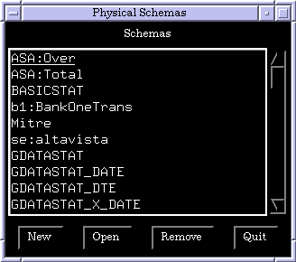
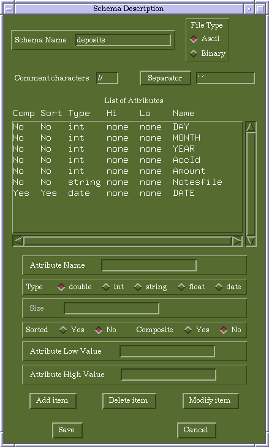
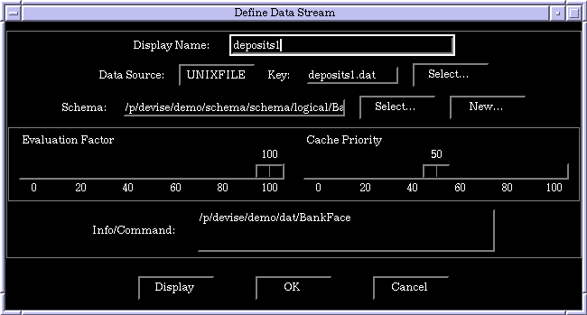
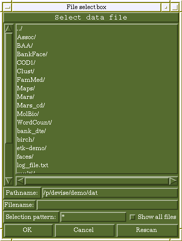
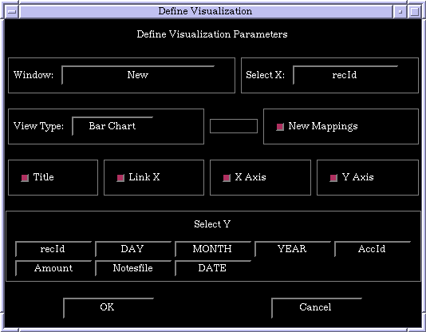
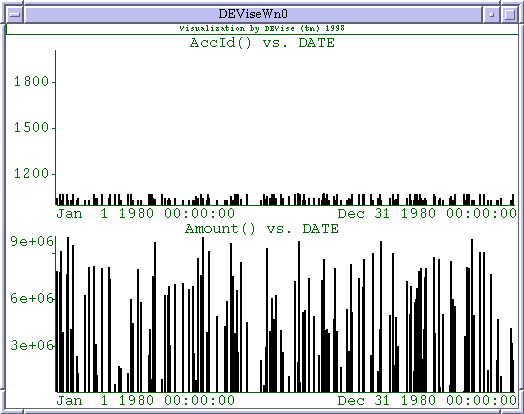
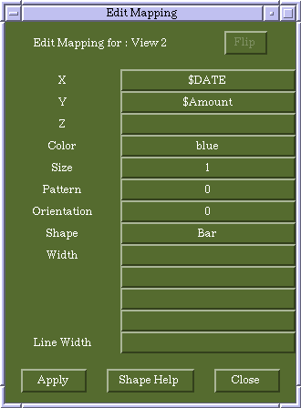
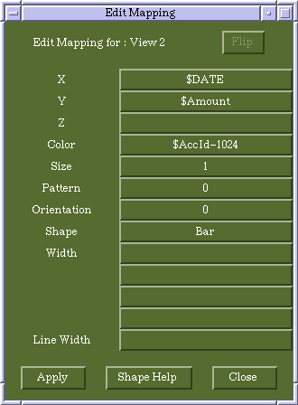
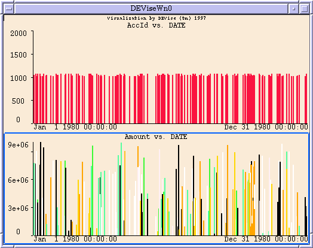

This page gives you a quick introduction on how to import data into DEVise. The assumption is that you have data in a file on local disk or a URL.
The following are the steps in importing data into DEVise:
The first step in importing data into DEVise is to define a schema that applies to that data. Select 'Physical' from the 'Schema' pull-right menu of the 'Tables' menu. You will see this window:

Click on 'New', and you will now see the schema description window:

This window allows you to define a schema for your data. Fill in the schema name, select the type (Ascii or Binary), enter the comment character(s), and enter the separator or whitespace character(s); then define the attributes. You must define the attributes in the order in which they appear in the records in your data file. (All records in a given file must have the same format. Any records that do not match the schema will be ignored.) Once you've added all of the attributes, click on 'Save'.
Select 'New Table' from the 'Tables' menu to get the 'Define Data Stream' window:

You can now define a data source by associating the file or URL containing the data with the schema for that data.
If your data is in a file, click on the 'Select' button to the right of 'Key:'. This will open the File select box:

Select the file containing your data. Once you've selected the data file, the File select box will automatically be shown again in order for you to select the schema file. Select the schema file you just defined (the filename will be the same as the schema name you specified).
If you want the display name of the data source to be different from the data file name, change it now. Then click 'OK'.
If your data is accessed via a URL, change the data source type from 'UNIXFILE' to 'WWW'. The rest of the procedure is basically the same, except that instead of selecting the data with the File select box, you must manually enter the URL in the Info/Command area of the 'Define Data Stream' window.
Select 'Visualize/Edit' from the Tables menu to open the 'Define Visualization' window:

Select the following:
Then click on 'OK'.
If you selected two Y attributes, you should see a window something like this:

Once you've visualized your data, you can change how it's visualized. Select one view by clicking in it, then click the 'Mapping' button in the DEVise main window; this shows the 'Edit Mapping' dialog:

For example, we can change the color of the graph to be dependent on the account ID:

This results in the following visualization:

By changing various attributes in the mapping, you can visualize the data in many different ways. There are also other, more advanced features in DEVise, such as links and cursors. For information on these features, see the DEVise user manual.